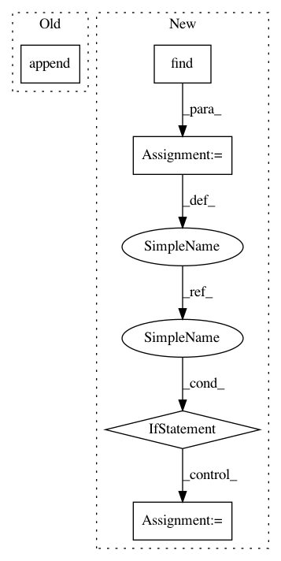

cc1d29a7a7a20a83a78a51a37eafa22ec9fa895d,newreads.py,GoodreadsAPI,books_by_author,#GoodreadsAPI#Any#,61
Before Change
title, book_id))
break
if not isauthor:
anthologies.append((publication_year,
publication_month,
title, book_id))
if int(end) >= int(total):
booklist.sort(reverse=True)
anthologies.sort(reverse=True)
After Change
except:
publication_month = 0
desc = booktag.find("description")
if desc:
desc = desc.text
else:
desc = ""
// print("%s (%s %s)" % (title,
// publication_month,
// publication_year))
// See if this is really a book authored by this author.
// Goodreads inexplicably gives huge long lists that
// include lots of books this author had nothing to do with.
// Unfortunately, we can"t just quit at that point;
// valid books aren"t necessarily listed before bogus books.
bookauthors = booktag.findAll("author")
authorlist = []
isauthor = False
for auth in bookauthors:
In pattern: SUPERPATTERN
Frequency: 3
Non-data size: 5
Instances
Project Name: akkana/scripts
Commit Name: cc1d29a7a7a20a83a78a51a37eafa22ec9fa895d
Time: 2019-06-27
Author: akkana@shallowsky.com
File Name: newreads.py
Class Name: GoodreadsAPI
Method Name: books_by_author
Project Name: akkana/scripts
Commit Name: cc1d29a7a7a20a83a78a51a37eafa22ec9fa895d
Time: 2019-06-27
Author: akkana@shallowsky.com
File Name: newreads.py
Class Name: GoodreadsAPI
Method Name: books_by_author
Project Name: NifTK/NiftyNet
Commit Name: 01c3a882833dc5031df2f4440717870b35e4833a
Time: 2017-05-29
Author: wenqi.li@ucl.ac.uk
File Name: utilities/constraints_classes.py
Class Name: ConstraintSearch
Method Name: list_subjects_potential
Project Name: keras-team/keras
Commit Name: 65ce238f03a572f1cad00a998545659fce2e1b83
Time: 2017-03-03
Author: hiroya.chiba@hc-eng.com
File Name: examples/pretrained_word_embeddings.py
Class Name:
Method Name: